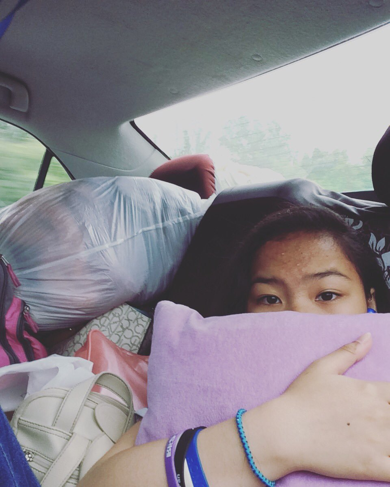
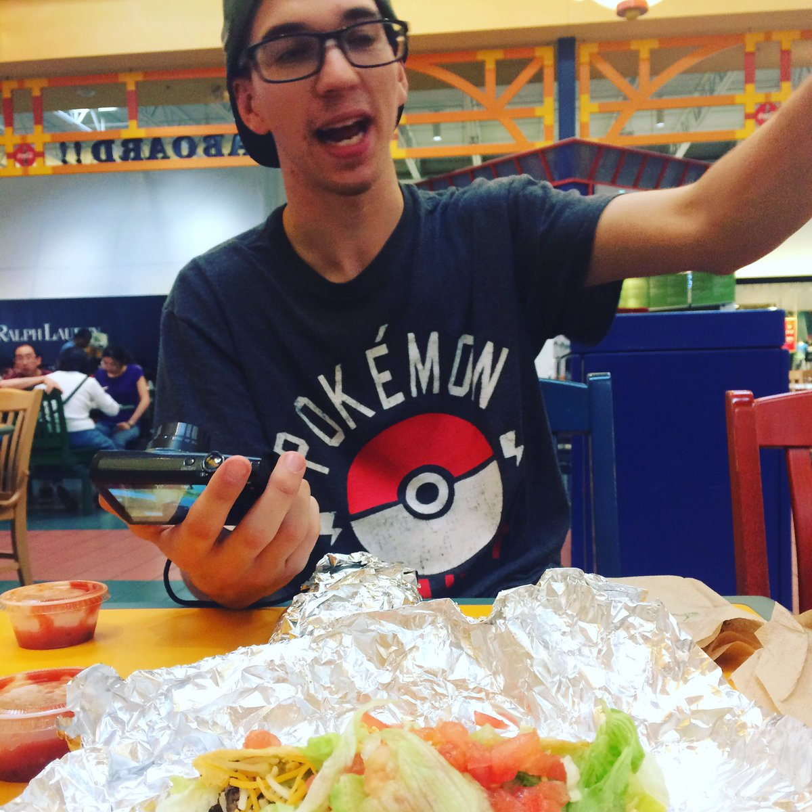

This is the official archive of "The Abandoned Cat", which was a fanfiction created by Galaxy from a Discord server that was known as "SoloCord". The story follows two Characters based on people from said server named SoloEclipze (Tiffany) and Valocarus (Noah). Tiffany seems to have been cursed, and turned into a cat. Noah finds her and takes her into his care. Do they find a way to reverse the curse? Does Noah like Tiffany, and does Tiffany feel the same way? Well, I guess you'll have to read it to find out! ;)
PART 01
PART 02
PART 03
PART 04
PART 05
PART 06
PART 07
PART 08
PART 09
PART 10
PART 11
PART 12
PART 13
Thank you SO much for finding the files for me, I promise this site won't die 2 weeks after I start hosting it like the other one I had xP While I will admit that this fanfiction hasn't aged well, it's one of the few things we still have from the official SoloCord. It was an amazing nostalgia trip, and I'm genuinely thankful for that. Thank you. ❤
 